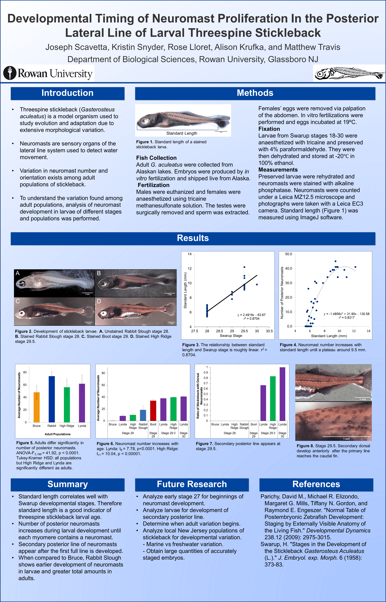

Research and Experience
Sep 2018 - May 2020
During my Master's, I worked as a Graduate Teaching Assistant. During this time, I investigated machine learning and predictive modeling approaches for predicting a compound's potential for drug-drug interactions. Specifically, I developed models to predict a compound's ability to inhibit CYP3A4. I leveraged in vitro data on 10,000s of compounds to develop and test models such as logistic regression, random forests, support vector machine, and neural network. I also developed two novel convolutional approaches: SMILES string auto-extraction and 2D structure auto-extraction. The advantages of the novel convolutional approaches are their ability to learn features from a compound's SMILES string, eliminating extensive feature engineering. The published thesis is available here.
I also instructed Intro to Scientific Programming and the lab portion of Intro to Object-Oriented Programming. While teaching Intro to Scientific Programming, I leveraged difficult coursework into a flipped workshop lecture with clear progressions. Each lecture, students followed along while we collectively learned and used a new concept and set of tools. In Intro to Object-Oriented Programming, I helped guide students in small groups or 1 on 1 to understand and complete their programming labs. I emphasized smart, efficient, and readable programming techniques.

Apr 2019 - Dec 2019
I collaborated with the Dr. Seal & Dr. Kellner Lab to develop species distribution models for six North American fungal farming ant species. To assist in this research, I developed an R package called maxentools. This package is a set of high level functions to provide easy training and evaluation of Maxent species distribution models. Using this package, we predicted species distributions from collected occurrence points amongst the six species. The models support the hypothesis that climate is a limiting factor in each species distribution and that these species have adapted to temperatures and water availability differently. The peer-reviewed, published manuscript is available here.
Oct 2016 - Aug 2018
The projects that I worked on under the Dr. Hnatyshyn Lab were funded and directed by Bristol Myers Squibb. I was recruited to the team to provide an agile solution for archived data, where the FDA was imposing a storage standard with a fast-approaching deadline. I developed software that allowed for this task to become semi-automated, decreasing the time and labor needed to solve the problem before the mandate.
Another project that I worked on is a method for streamlining the access and retrieval of data from metabolic databases like KEGG and HMDB. I developed the metabolite search utility, which provides a framework for automating searches across metabolic databases and retrieving data, such as pathways.
I also worked on a project in collaboration with the Allotrope foundation on designing and developing a unanimous data storage solution. The idea is to use standard ontologies and data structures for efficient storage and data retrieval. I developed software that converts Thermo Fisher Scientific RAW files created by LC-MS equipment into an early version of Allotrope’s file format. This provided a proof of principle for the foundation. I optimized writing and storing large, multidimensional data for both speed and memory efficiency. Allotrope provided me an opportunity to present a poster displaying my experiences and my software at a conference sponsored by Merck.
Another key project was implementing an LC-MS peak alignment algorithm. Many LC-MS samples can be aligned into one consensus through peak matching using the LWBMatch algorithm. In this project, I implemented and improved the LWBMatch algorithm to find peak-to-peak matches using weighted bipartite models and peak distance functions.

May 2015 - Aug 2018
I became a member of Dr. Lana Vojvodic’s social insect lab during the start-up of the lab at Rowan. I explored on social disease resistance using Temnothorax curvispinosus, an ant found in the eastern United States that lives in acorns, and Metarhizium brunneum, an entomopathogenic fungus. These studies also explored the metapleural gland, specific to ants and thought to secrete antimicrobial fluids. I am acting as a first author on a developing manuscript for this research.
I also worked with honey bees, becoming a fundamental beekeeper within the lab. The research with honey bees focused on their gut microbiome, where we isolated, cultured, and sequenced many clades of gut microbes. Specifically, we explored two projects: the impact of gut microbes on caste determination and the impact of gut microbes on learning and memory.
I have presented multiple posters at Rowan’s annual STEM symposium and presented two talks at the Social Insects in the North-East Regions (SINNERS) biannual conference. I presented a poster at the Evolution in Philadelphia Conference (EPiC) hosted at the University of Pennsylvania, where I was awarded third place in a poster competition.

Feb 2018 - May 2018
A collaboration between Dr. Vojvodic's lab and Dr. Linksvayer's lab arrose to investigate the genetics of social disease resistance in acorn ants. We conducted RNASeq on various treatments to find differential gene regulation depending on social conditions and inoculation status. We analyzed RNA in three segments of the ants: head, mesosoma, and gaster. This study is still in progress.

Oct 2014 - May 2015
We researched Neuromast Proliferation of Larval Threespine Stickleback. This researched involved staining and identification of neuromasts on stickleback adults and larvae, maintaining salt water tanks with adult and larval stickleback, and identification and collection of Threespine stickleback from salt marshes.
